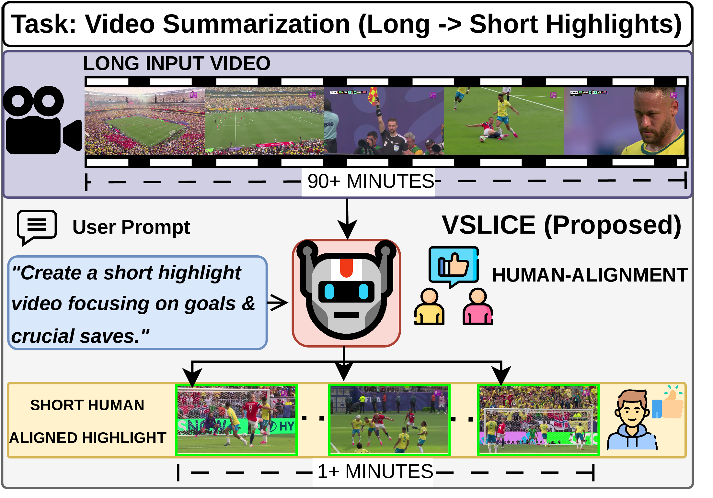
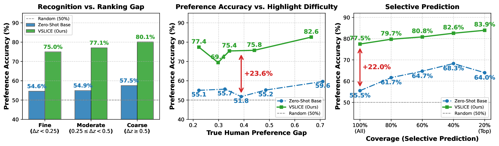
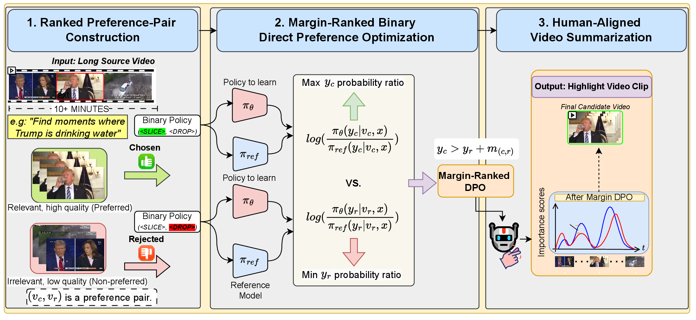
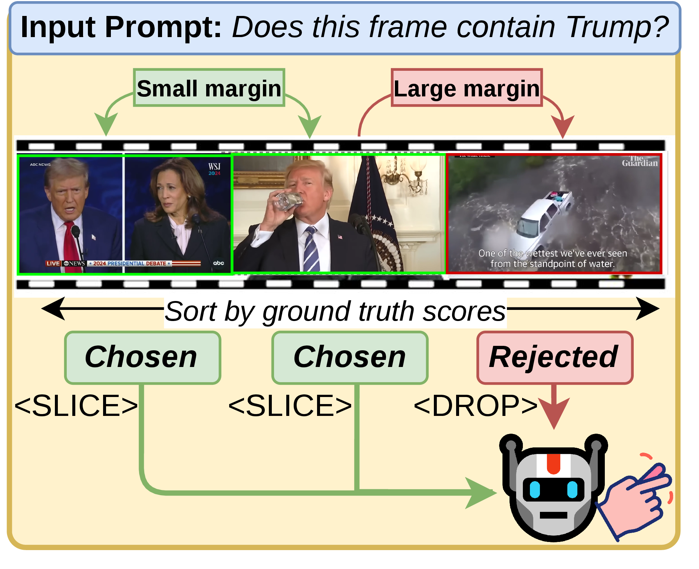

✂️🎬 VSLICE
SLICE or DROP: Margin-Ranked Binary Preference Alignment for Video Summarization with Large Vision-Language Models
Overview概述
Large Vision-Language Models (LVLMs) excel at semantic reasoning, but their zero-shot ability struggles with highlight detection because they are not aligned with what humans consider a “highlight”. VSLICE is a model alignment framework for open-ended video summarization. It constrains open-ended responses into a tractable binary state space to isolate target visual segments, then aligns those binary outputs with a Margin-Ranked Direct Preference Optimization (DPO) pipeline that preserves both the order and the strength of human preferences.
大型视觉语言模型 (LVLM) 擅长语义推理，但由于缺乏与人类“精彩片段”标准的对齐，其零样本能力在精彩片段检测上表现欠佳。VSLICE 是一个面向开放式视频摘要的模型对齐框架：它将开放式回答约束到可处理的二元状态空间，以分离目标视觉片段；再通过间隔排序直接偏好优化 (Margin-Ranked DPO) 流程对齐这些二元输出，同时保留人类偏好的顺序与强度。

User Prompt-Driven Short Video Creation提示驱动的短视频创作
Because VSLICE outputs a query-conditioned importance curve for every frame, it can drive editing directly. With a quantized MiniCPM-V the full pipeline runs on a single 8 GB RTX 3070.
由于 VSLICE 能为每一帧生成以查询为条件的稠密重要性曲线，它可以直接驱动视频剪辑。使用量化的 MiniCPM-V，整个流程可在单张 8 GB RTX 3070。
Example input and output输入与输出示例
1. Motivation: Recognition Is Not Ranking1. 动机：识别不等于排序
Caption-based summarizers such as LLMVS collapse video into static text, losing fine-grained spatio-temporal context, and their generated scores reflect sentence likelihood rather than visual importance. LVLMs tend to give high confidence to background scenes that share context with the query. We measure this with preference accuracy, the share of clip pairs (humans prefer \(v_c\) over \(v_r\), gap \(\Delta s = s_c - s_r\)) where the model is more confident on the preferred clip.
以 LLMVS 为代表的基于字幕的摘要方法将视频压缩为静态文本，丢失了细粒度的时空上下文，且其生成的分数反映的是句子的语言概率，而非视觉重要性。LVLM 则容易对与查询共享上下文的背景场景给出高置信度。我们用偏好准确率衡量这一现象，即在人类更偏好 \(v_c\) 而非 \(v_r\)（偏好差 \(\Delta s = s_c - s_r\)）的片段对中，模型对更受偏好片段给出更高置信度的比例。

Base LVLMs separate coarse contrasts but fall toward chance on subtle ones, and the failure is not limited to low-confidence predictions: they still pick the less important segment in nearly 36% of their highest-confidence comparisons. Their scores encode visual-text affinity, not relative highlight importance, so no global threshold can separate highlights from semantically related content. A summarizer has to capture the relative ordering of segments as humans see it, not only whether an event is present.
基础 LVLM 能区分粗粒度差异，但在细微差异上接近随机；而且这种失败并不局限于低置信度预测——即使在其置信度最高的比较中，仍有近 36% 选择了较不重要的片段。它们的分数反映的是视觉-文本亲和度，而非精彩程度的相对高低，因此任何全局阈值都无法将精彩片段与语义相关内容区分开。视频摘要不仅要识别事件是否出现，更要捕捉符合人类偏好的片段相对排序。
2. Method2. 方法
VSLICE turns LVLM summarization into a sequence of binary decisions, then learns those binary scores from human-graded preference pairs.
VSLICE 将 LVLM 视频摘要转化为一系列二元决策，并从人类分级的偏好对中学习这些二元分数。

2.1 Margin Preference-Pair Selection2.1 间隔偏好对选择
Clips that elicit the same action can still differ in importance. Both the debate and Trump drinking water contain Trump and warrant <SLICE>, but annotators rate the debate higher, so that pair gets a small margin, while a Trump clip versus the flood scene gets a large one. VSLICE therefore keeps the magnitude of the human score difference, not just the order.
触发相同动作的片段，其重要性仍可能不同。辩论片段和特朗普喝水片段都包含特朗普、都应 <SLICE>，但标注者认为辩论更精彩，因此二者之间只有较小的间隔；而特朗普片段与洪水场景之间的差距则很大。因此 VSLICE 保留的是人类评分差异的幅度，而不仅仅是顺序。

<SLICE> chosen highlights and <DROP> irrelevant clips. Each pair carries a margin \(m_{(c,r)}\) set by the human scores, so stronger preferences require larger confidence gaps.针对查询事件，模型应对选中的精彩片段输出 <SLICE>，对无关片段输出 <DROP>。每个片段对都带有由人类评分决定的间隔 \(m_{(c,r)}\)，偏好越强，所需的置信度差距越大。- Sort each training video's subclips by ground-truth highlight score.按真实精彩度分数对每个训练视频的子片段排序。
- Take the top-\(j\) as chosen (peaks) and the bottom-\(j\) as rejected (valleys), with \(j \le |C|/2\).取前 \(j\) 个作为选中集（峰值），后 \(j\) 个作为拒绝集（谷值），其中 \(j \le |C|/2\)。
- Pair the \(i\)-th chosen with the \(i\)-th rejected: early pairs have large gaps, later pairs approach the median and differ only slightly.将第 \(i\) 个选中片段与第 \(i\) 个拒绝片段配对：靠前的片段对差距大，靠后的接近中位数、差异细微。
- Give each pair the log-ratio margin \(m_{(c,r)} = \log(s_c+\epsilon) - \log(s_r+\epsilon)\). All pairs come from the same video.为每个片段对赋予对数比间隔 \(m_{(c,r)} = \log(s_c+\epsilon) - \log(s_r+\epsilon)\)。所有片段对均来自同一视频。
2.2 Visual-Preference Alignment via Margin-DPO2.2 基于 Margin-DPO 的视觉偏好对齐
Standard DPO compares two text responses under the same input. VSLICE instead compares two visual states (a chosen subclip \(v_c\) and a rejected subclip \(v_r\)) and treats the LVLM as a subclip-selection policy. Because video summarization labels are continuous human importance scores, VSLICE subtracts the pair-specific margin inside a margin-ranked Bradley-Terry model, giving the final objective:
标准 DPO 在同一输入下比较两个文本回答。VSLICE 则比较两个视觉状态（选中子片段 \(v_c\) 与拒绝子片段 \(v_r\)），并把 LVLM 视为一个子片段选择策略。由于视频摘要的标注是连续的人类重要性分数，VSLICE 在间隔排序 Bradley-Terry 模型中减去每个片段对特有的间隔，得到最终目标：
Margin as a score-ratio constraint. A pair meets its margin exactly when the aligned model's confidence ratio exceeds the reference model's by at least the human importance ratio:
间隔即分数比约束。当且仅当对齐后模型的置信度比值至少比参考模型高出人类重要性比值的倍数时，该片段对满足其间隔：
Confidences therefore follow the proportions of human importance relative to the reference. When the reference is already confident on \(v_c\), the margin can only be met by suppressing \(v_r\). The objective learns the order and the strength of each preference.
因此，相对于参考模型，置信度会遵循人类重要性的比例。当参考模型对 \(v_c\) 已经很有把握时，只能通过压低 \(v_r\) 来满足间隔。该目标同时学习每个偏好的顺序与强度。
Demo Gallery (Summary Outputs)示例图库
Examples of video summaries that VSLICE can create. Click a video to unmute.
VSLICE 生成的视频摘要示例。点击视频可开启声音。
BibTeX
@article{vslice2026,
title = {SLICE or DROP: Margin-Ranked Binary Preference Alignment for
Video Summarization with Large Vision-Language Models},
author = {Anonymous},
note = {Under review},
year = {2026}
}